Unser Verein
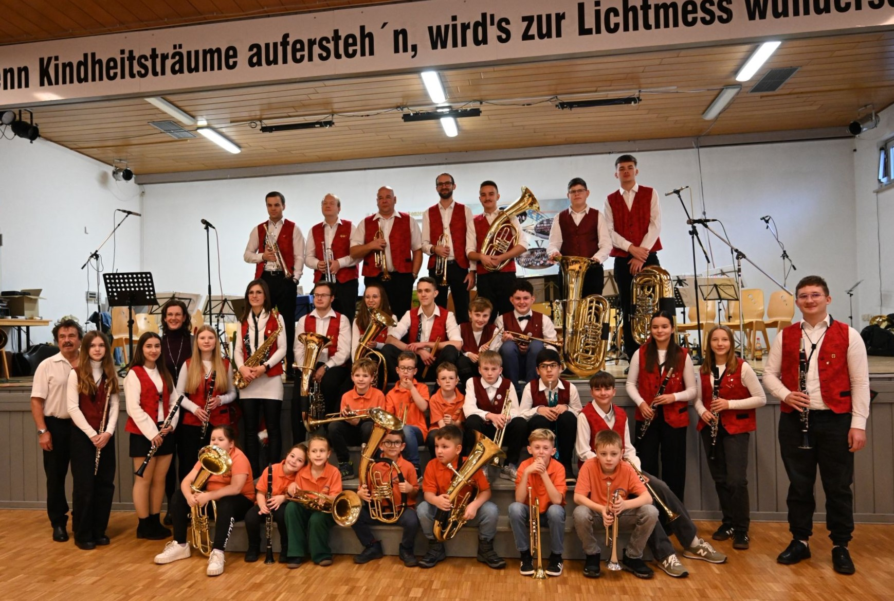
Am 22. September 1986 trafen sich 22 Mädchen und Jungen auf dem Schulhof in Jüchsen – gebannt, als aus einem Kleinbus die ersten Instrumente ausgeladen wurden. Die Geburtsstunde des Jüchsener Pionierblasorchesters war gekommen. Mit Unterstützung des Bezirksmusikcorps und engagierten Lehrern wuchs das Ensemble schnell: Bereits 1987 zählte es rund 40 Musikerinnen und Musiker. Nach der Wende folgte 1990 die Neugründung als eigenständiger Jugendmusikverein Jüchsen e.V.
Mehr über unseren Verein erfahren...
Die nächsten Jahre standen voller Highlights: regelmäßige Musikfeste, eine Konzertreise nach Spanien (1992), Probenlager am ungarischen Balaton und 1995 ein ganz besonderer Moment – der erste Live-Auftritt im Fernsehen bei der Grünen Woche in Berlin. Bei den Wertungsspielen des Blasmusikverbandes Thüringen belegte der Verein stets obere Plätze und bewies damit, was mit Leidenschaft und Einsatz möglich ist. Auch heute ist der Jugendmusikverein aus dem kulturellen Leben der Region nicht wegzudenken. Mit zahlreichen Auftritten im Jahr – bei Dorffesten, Kirchweihfeiern, Jubiläen und festlichen Konzerten – ist das Orchester ein verlässlicher Begleiter im Grabfeld und Werratal. Über 40 aktive und passive Mitglieder tragen den Verein, und jedes Jahr kommen neue junge Musikerinnen und Musiker dazu. Im Jahr 2026 feiern wir unser 40-jähriges Jubiläum – vier Jahrzehnte, in denen der Verein Generationen zusammengebracht hat. Musik, Gemeinschaft und Heimatverbundenheit: Das war von Anfang an unser Antrieb, und das ist es bis heute.
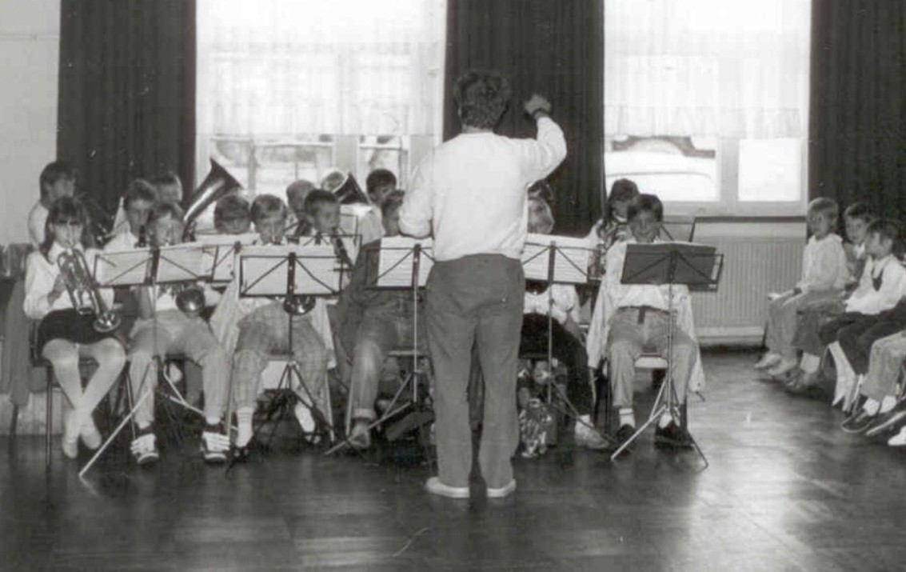
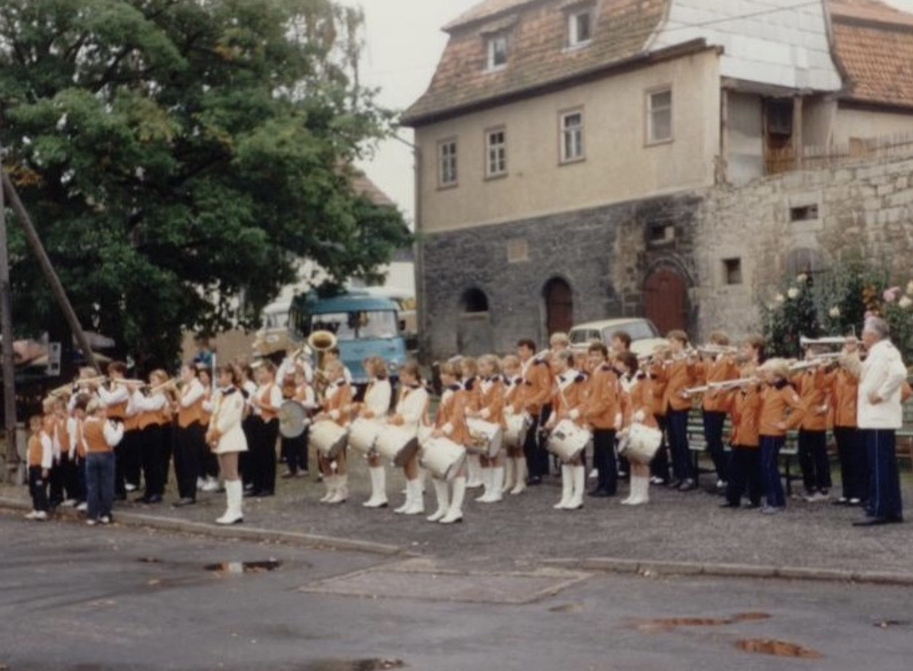
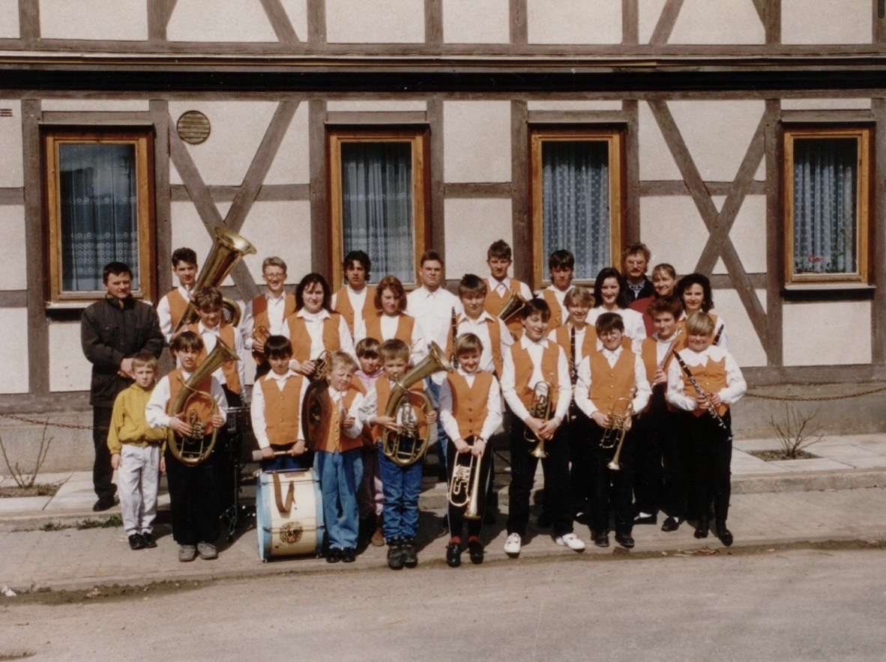
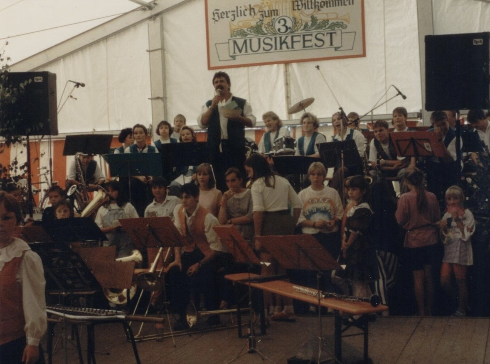
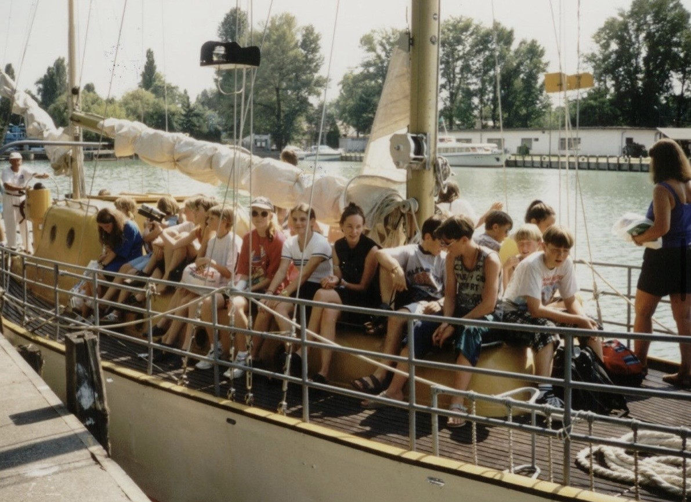
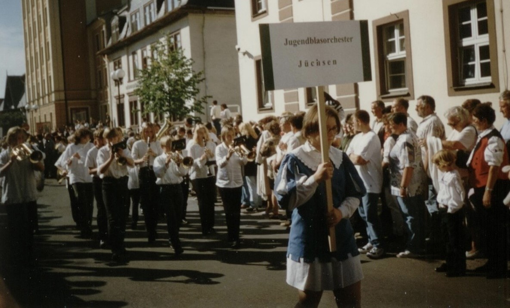
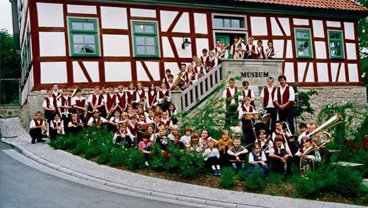
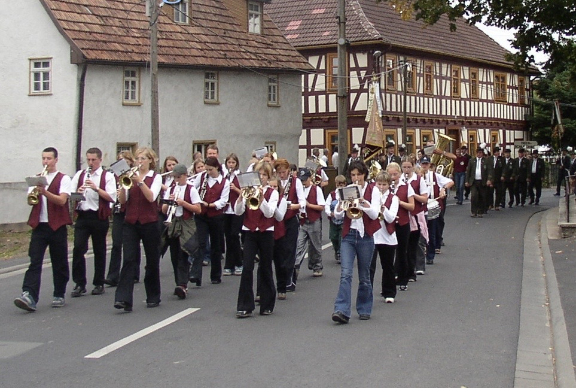

Angebot
Musik für alle Fälle. Egal ob Sie Geburtstag feiern, Hochzeiten, Kirmes, Dorffeste oder Umzüge planen, melden Sie sich bei uns! Wir bringen Ihre Veranstaltung zum Klingen!
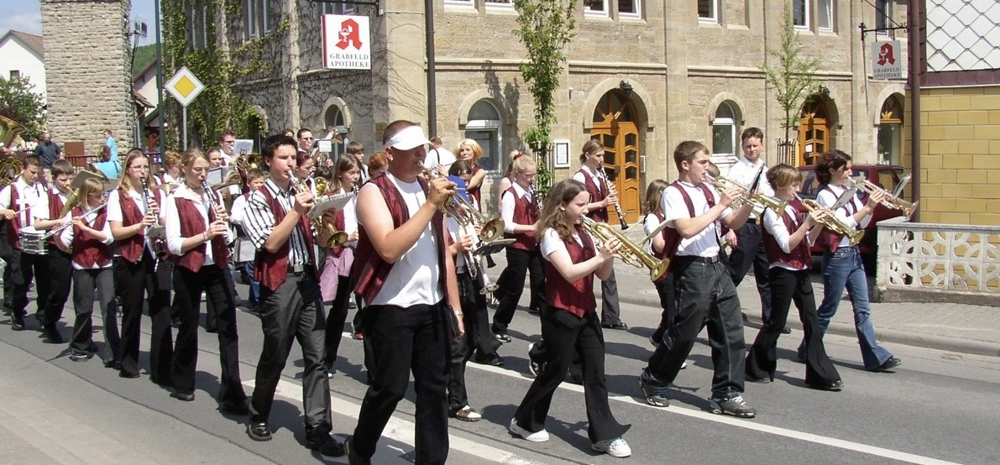
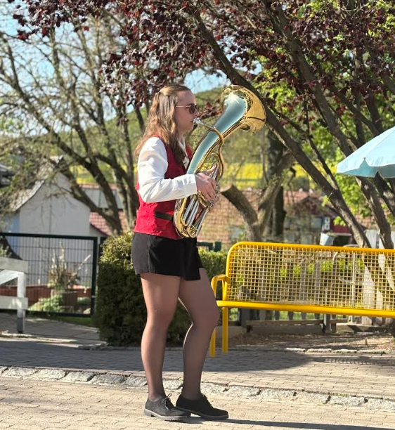
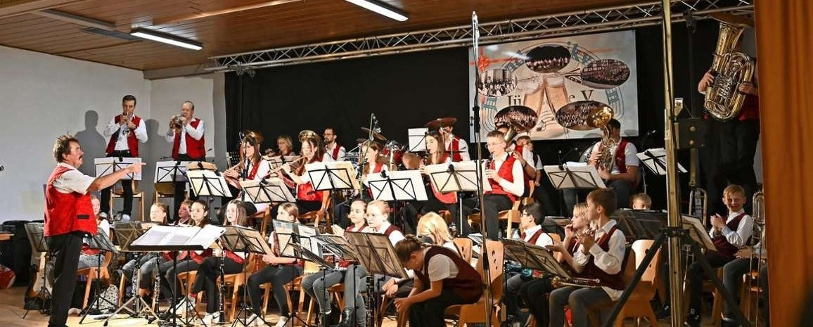
Lerne dein erstes Instrument
Du hast Lust auf eine neue Herausforderung oder ein neues Hobby? Der JMV Jüchsen e.V. ist ständig auf der Suche nach neuen Mitstreitern und neuen Musikanten. Die musikalische Früherziehung soll Frühbegabung und Talente fördern und den Kindern eine sinnvolle Freizeitgestaltung ermöglichen, aber auch Kameradschaft und Gemeinschaftssinn entwickeln. Bewährt haben sich Anfängerkurse mit der Blockflöte. Dieser Kurs erstreckt sich über einen Zeitraum von ein bis zwei Jahren. Bei entsprechender Eignung werden diese Kurse dann auf Orchesterinstrumente erweitert. Der Einstieg ist aber auch mit einem Orchesterinstrument möglich. Die Instrumente werden vom Verein gestellt. Ergebnisse dieser Arbeit stellen wir dann regelmäßig in der Öffentlichkeit vor. Haben wir sie neugierig gemacht? Dann melden Sie sich bei uns und fragen unverbindlich an.
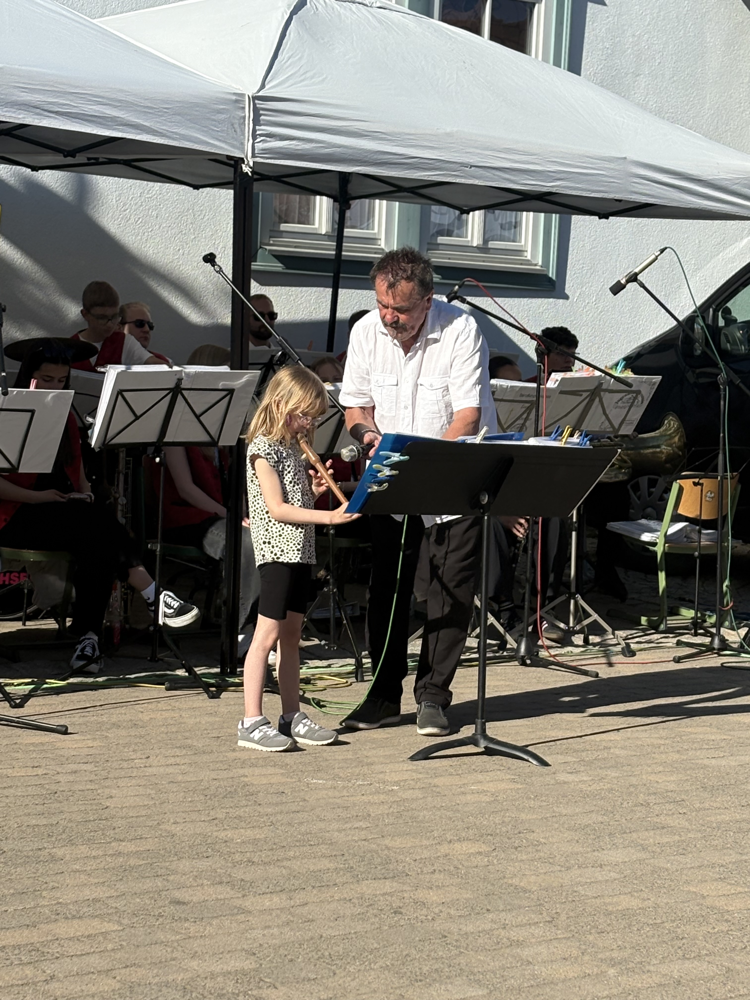
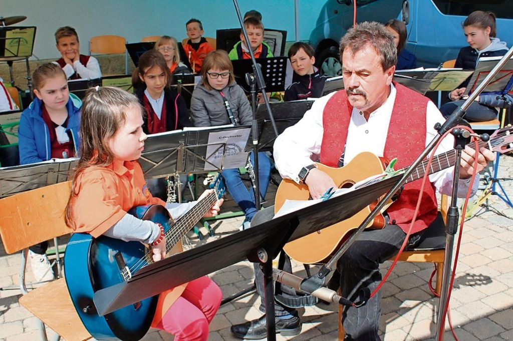
Unsere Lehrer
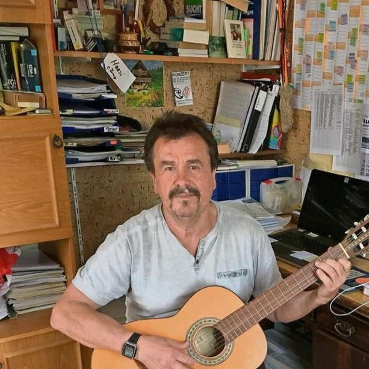
Tenorhorn und Tuba
Klarinette, Saxophon und Querflöte
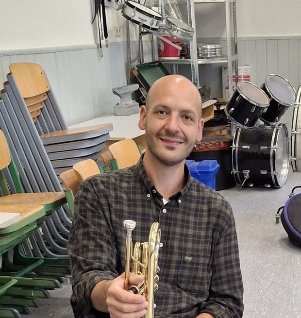
Trompete
Schlagzeug